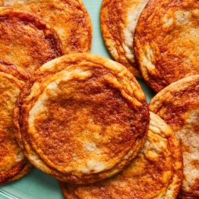

← All recipes
Gochujang Caramel Cookies

Servings: About 8 large cookies ·
Ingredients
- 1/2 cup (8 tablespoons)/115 grams unsalted butter, very soft
- 2 packed tablespoons dark brown sugar
- 1 heaping tablespoon gochujang
- 1 cup/200 grams granulated sugar
- 1 large egg, at room temperature
- 1/2 teaspoon coarse kosher salt or 3/4 teaspoon kosher salt (such as Diamond Crystal)
- 1/4 teaspoon ground cinnamon
- 1 teaspoon vanilla extract
- 1/2 teaspoon baking soda
- 1 1/2 cups/185 grams all-purpose flour
Directions
- In a small bowl, stir together 1 tablespoon butter, the brown sugar and gochujang until smooth. Set aside for later, at room temperature.
- In a large bowl, by hand, whisk together the remaining 7 tablespoons butter, the granulated sugar, egg, salt, cinnamon and vanilla until smooth, about 1 minute. Switch to a flexible spatula and stir in the baking soda. Add the flour and gently stir to combine. Place this large bowl in the refrigerator until the dough is less sticky but still soft and pliable, 15 to 20 minutes.
- While the dough is chilling, heat the oven to 350 degrees and line 2 large sheet pans with parchment.
- Remove the dough from the refrigerator. In 3 to 4 separately spaced out blobs, spoon the gochujang mixture over the cookie dough. Moving in long circular strokes, swirl the gochujang mixture into the cookie dough so you have streaks of orange-red rippled throughout the beige. Be sure not to overmix at this stage, as you want wide, distinct strips of gochujang.
- Use an ice cream scoop to plop out ¼-cup rounds spaced at least 3 inches apart on the sheet pans. (You should get 4 to 5 cookies per pan.) Bake until lightly golden at the edges and dry and set in the center, 11 to 13 minutes, rotating the pans halfway through. Let cool completely on the sheet pan; the cookies will flatten slightly and continue cooking as they cool. The cookies will keep in an airtight container at room temperature for up to 2 days.
Original source: cooking.nytimes.com